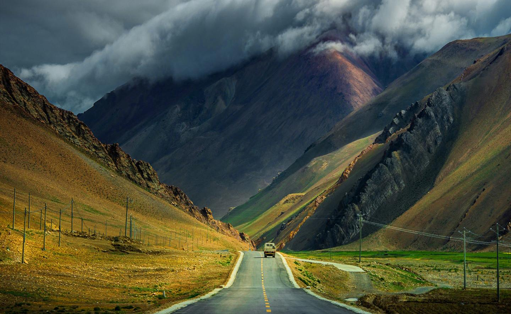

1 / 3

Caption one
2 / 3
Caption Two
3 / 3

Caption Three
3 / 3
Caption four
3 / 3
Caption five
The Leh Valley lies at an altitude of about 3,500 metres and the surrounding mountains rise to over 6,000 metres. The area is remote: the main road linking Ladakh with the rest of India is cut off by snow for six months or more each year. This is a high-altitude desert environment where water is precious. Agriculture and human settlements depend on water from snow melt, which flows towards the Indus River.
Traditionally, most Ladakhis were subsistence farmers growing mainly barley and vegetables, or they were nomads tending goats and yaks. The opening of a road in the 1960s linking Ladakh with the plains brought large numbers of army personnel and the spread of the Indian civil administration.
The private sector is small, comprising mainly seasonal, tourism-related activities. There are few substantial companies and few enterprise role models among the Buddhist community. The main aim in life for many young Ladakhis is to obtain government employment, even though few such jobs are available.
Situated in the Leh-Ladakh region of North Indian state of Jammu & Kashmir, Kargil finds its place amongst few of the most stunning and breathtakingly beautiful tourist destinations in the country. The picturesque little town came into limelight during the Operation Vijay, more famously known as the Kargil War which was fought between India-Pakistan in the year 2009.